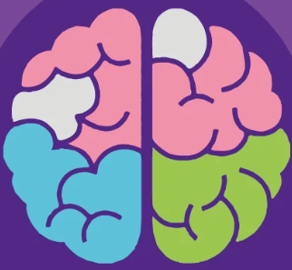
Conexiones de aprendizaje
Cómo identificar la dislexia en el aula
AUTORES
- Diana Vanessa Garcia Pineda ID: 996438
- Keila Rocio Rojas Palomino ID: 929199
- Claudia Patricia Polo Caicedo ID: 935895
- Estefany Milena Ordoñez Lopez ID: 870695
- Janit Esther Álvarez Pereira ID: 943939
Diplomado: Dificultades del Aprendizaje
Equipo: ####################
Dificultad abordada: Dislexia
Fecha de entrega: 19 de octubre de 2026
¿Qué encontrarás?
INTRODUCCIÓN
La dislexia es una dificultad específica del aprendizaje que afecta la lectoescritura. No tiene relación con la inteligencia ni con la falta de esfuerzo, sino con la manera en la cual el cerebro procesa el lenguaje escrito.
Esta cartilla está dirigida a docentes de 1° a 3° de básica primaria, quienes día a día acompañan los procesos iniciales de lectura y escritura y pueden convertirse en los primeros observadores de las señales de alerta.
Aquí encontrarás información clara sobre qué es la dislexia, cómo identificarla a tiempo, qué factores influyen, cómo impacta el aprendizaje y, sobre todo, estrategias y actividades listas para aplicar en el aula.
¿QUÉ ES LA DISLEXIA?
Se manifiesta en dificultades para reconocer y leer palabras con precisión y fluidez, relacionar los sonidos del habla con las letras y adquirir las habilidades de lectoescritura (ASANDIS, 2010).
Tiene una base neurobiológica: el cerebro procesa el lenguaje escrito de manera diferente, especialmente en las áreas del hemisferio izquierdo encargadas del procesamiento fonológico (D'Mello & Gabrieli, 2018).
MITO
👆 Toca un mito para descubrir la realidad
REALIDAD
TIPOS DE DISLEXIA
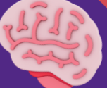
Señales
de alerta
POR EDADES
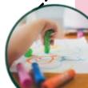
Preescolar (4 a 5 años)
- Dificultad en el aprendizaje de rimas y canciones.
- Confusión en la pronunciación de palabras largas.
- Bajo interés por cuentos.
- Dificultad en el reconocimiento del nombre propio escrito.
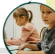
Primaria temprana (6 a 9 años)
- Lectura lenta y frecuentemente con errores.
- Confunde las letras similares (b/d, p/q).
- Omisión o cambio de sílabas durante la lectura o escritura.
- Dificultad para copiar del tablero.
- Escritura desordenada o ilegible.
Señales
EMOCIONALES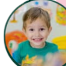
- Evadir la lectura en voz alta.
- Frustración con facilidad frente a tareas de lectura.
- Expresa: “no me gusta leer” o “soy malo para esto”.
- Baja autoestima escolar.
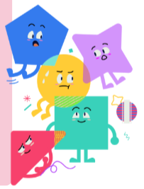
Prevalencia
Una revisión internacional de 56 estudios (Yang et al., 2022) estimó que aproximadamente 7 de cada 100 estudiantes de primaria podrían presentar dislexia del desarrollo.
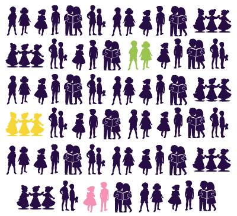
En un aula de clase de
estudiantes, podrían haber 2 infantes con esta dificultad.
FACTORES
- 🧬
Antecedentes familiares40 % entre hermanos; 49 % si alguno de los padres la tienen (Jaén, 2019)
- 🧠
Bases neurobiológicas
- 📢
Dificultades en la conciencia fonológica
- ⏰
Baja estimulación temprana
- 😟
Experiencias de fracaso repetidas
Detección temprana
🔍Intervención pedagógica oportuna
🧑🏫Apoyo de la familia
👨👩👧Ambiente escolar inclusivo
🏫Trabajo interdisciplinario
🤝
"La dislexia no determina la capacidad de aprender. Con el acompañamiento adecuado, el estudiante puede desarrollar todo su potencial."
- Lectura lenta
- Errores de escritura
- Baja comprensión
- Mayor tiempo en tareas
- Evita participar
- Miedo a leer en voz alta
- Burlas o comparaciones
- Aislamiento
- Frustración
- Baja autoestima
- Ansiedad
- Desmotivación
"El docente no diagnostica: detecta, apoya y activa la ruta de acompañamiento."
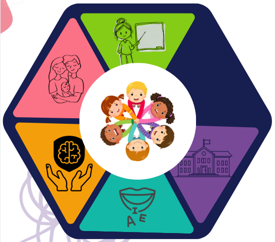
- 01DocenteDetecta, adapta y registra.
- 02FamiliaApoya y da continuidad en la casa.
- 03PsicologíaValora aspectos emocionales y cognitivos.
- 04FonoaudiologíaFortalece el lenguaje y la conciencia fonológica.
- 05InstituciónFacilita la comunicación y el debido seguimiento.
ESTRATEGIAS
DIDÁCTICAS
Cada letra cuenta, cada logro importa
Propuestas de ejercicios y estrategias pedagógicas aplicables para acompañar a estudiantes con dislexia.
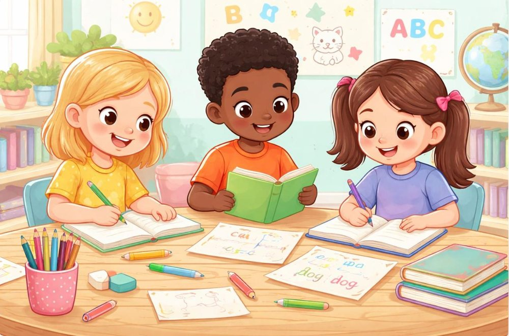
Esta cartilla está dirigida a docentes que trabajan con estudiantes de 1.º, 2.º y 3.º de primaria que presentan dificultades en la lectura y la escritura relacionadas con la dislexia. Contiene actividades sencillas, ilustradas, lúdicas y adaptables a las necesidades de cada niño, para que puedan aprender sin sentirse presionados.
La idea principal es que los niños aprendan jugando, reconozcan sus avances y comprendan que cada uno tiene su propio ritmo de aprendizaje. Las actividades pueden desarrollarse en el aula, en pequeños grupos o con el acompañamiento de la familia.
👆 Toca cada tarjeta para darle la vuelta.
Actividades didácticas ilustradas
Elige una actividad: cada tarjeta abre su guía para el docente y un juego interactivo.
Mi semáforo del aprendizaje
Actividad complementaria. Esta actividad ayuda a los estudiantes a expresar cómo se sienten durante los ejercicios, sin temor a equivocarse.
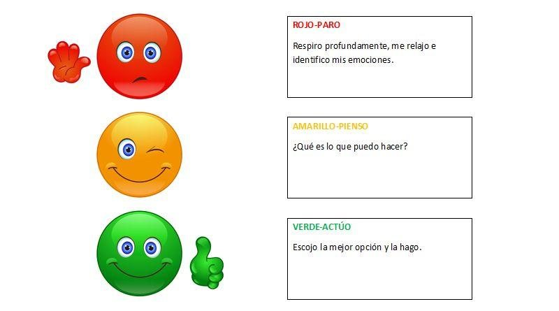
👆 Toca una luz del semáforo: ¿cómo te sientes con la actividad?
- Verde: entendí y puedo intentarlo solo.
- Amarillo: necesito un poco de ayuda.
- Rojo: todavía me cuesta y necesito que me expliquen de otra manera.
El docente escucha las respuestas y adapta la actividad cuando sea necesario. El semáforo no debe utilizarse para calificar ni comparar a los niños.
Recomendaciones para docentes y familias
👆 Toca cada tarjeta para leer la recomendación.
También es importante recordar que estas actividades son apoyos pedagógicos y no sustituyen una valoración profesional. Si las dificultades persisten, conviene coordinar el acompañamiento con los profesionales correspondientes y con la institución educativa.
Instrumento sencillo para evaluar los avances
Este registro permite hacer seguimiento individual sin comparar a un niño con otro. Marca el nivel observado en cada habilidad.
| Habilidad | Lo realiza con apoyo | Está en proceso | Lo realiza con mayor autonomía |
|---|
La evaluación debe repetirse periódicamente para observar el progreso del estudiante, identificar qué apoyos le funcionan y decidir qué habilidades necesitan más práctica.
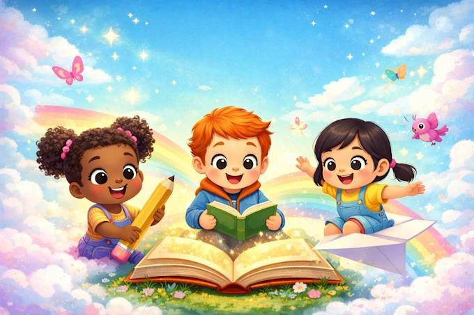
¡Cada niño aprende a su ritmo!
Con paciencia, comprensión y oportunidades, cada pequeño avance se convierte en un gran logro.
LIBROS
- L1 Hudson, D. (2017). Dificultades específicas de aprendizaje y otros trastornos: Guía básica para docentes (S. Alcina Zayas, Trad.). Narcea Ediciones.
- L2 Asociación Madrid con la Dislexia y otras DEA & ANPE-Madrid, sindicato independiente. (2014). La dislexia en el aula. https://fenacerci.pt/web/publicacoes/outras/GUIA-DISLEXIA-COMPLETA_14.pdf
- L3 Angulo Domínguez, M. D. C., Ocampos, J. G., Luque Vilaseca, J. L., Rodríguez Romero, M. D. P., Sánchez Cantero, R., Satorras Fioretti, R. M., Vázquez Uceda, M., Junta de Andalucía, Consejería de Educación, Dirección General de Participación e Innovación Educativa, & Cúbica Multimedia, S.L. (2010). Manual de atención al alumnado con necesidades específicas de apoyo educativo derivadas de dificultades específicas de aprendizaje: dislexia. Junta de Andalucía. https://pavlov.psyciencia.com/2012/10/Guia-para-ninos-y-ninas-con-dislexia.pdf
REVISTAS CIENTÍFICAS
- A1 Bastidas González, K. A., Jumbo Jumbo, F. V., Mazón Vera, V. S., & Bastidas González, L. D. (2023). La dislexia: rol del docente en el diagnóstico precoz en estudiantes de educación básica. Ciencia Latina Revista Científica Multidisciplinar, 7(1), 9191–9208. https://doi.org/10.37811/cl_rcm.v7i1.5112
- A2 Tamayo Lorenzo, S. (2017). La dislexia y las dificultades en la adquisición de la lectoescritura. Profesorado, Revista de Currículum y Formación del Profesorado, 21(1), 423–432. https://doi.org/10.30827/profesorado.v21i1.10372
- A3 Yang, L., Li, C., Li, X., Zhai, M., An, Q., Zhang, Y., Zhao, J., & Weng, X. (2022). Prevalence of developmental dyslexia in primary school children: A systematic review and meta-analysis. Brain Sciences, 12(2), 240. https://doi.org/10.3390/brainsci12020240
- A4 Snowling, M. J., Hulme, C., & Nation, K. (2020). Defining and understanding dyslexia: Past, present and future. Oxford Review of Education, 46(4), 501–513. https://doi.org/10.1080/03054985.2020.1765756